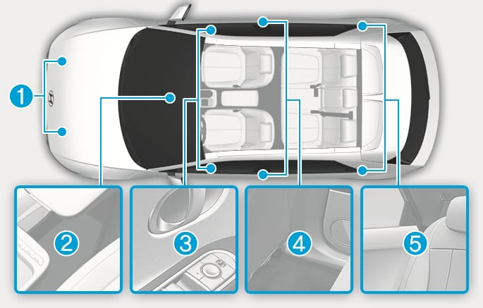

충돌 센서

2C_AirbagSensorOverview
- 정면 충돌 센서 : 모터룸 앞쪽에 위치
- 에어백 제어 모듈
- 측면 충돌 감지 센서(압력): 앞 도어에 내장
- 측면 충돌 감지 센서(가속도): B필라 아래쪽에 내장
- 측면 충돌 감지 센서(가속도): C필라 중앙에 내장
에어백 제어 모듈은 충돌 센서로부터 전달된 충돌 신호를 분석해 에어백 작동 여부를 결정합니다.

2C_AirbagSensorOverview
에어백 제어 모듈은 충돌 센서로부터 전달된 충돌 신호를 분석해 에어백 작동 여부를 결정합니다.